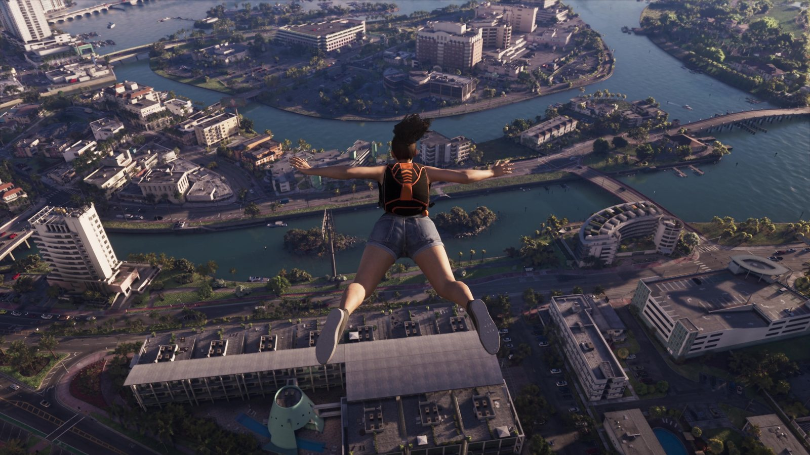

Слух: сюжет GTA 6 — 80 часов, а карта втрое больше RDR2
Обновлено:

- Слух: GTA 6 займёт около 80 часов, а мир будет втрое больше RDR2.
- Источник цифр — Роб Нельсон, один из руководителей Rockstar North.
- Разговор шёл в интервью The New York Times и ютуберу TGG в день «Расширенного показа».
- Ещё одна цифра от Нельсона: в игре более 600 000 анимаций против 55 000 в GTA 5.
Подтверждено руководителем Rockstar North Робом Нельсоном: его прохождение заняло около 80 часов, карта — примерно вдвое больше GTA 5 и втрое больше RDR2.
Что говорят
С длиной GTA 6 интернет играл в угадайку несколько лет. Один «отчёт» обещал всего 35–40 часов сюжета при огромной карте, другой слух — 75 часов, третьи сайты писали про «до 100 часов». Каждую цифру пересказывали как почти официальную.
27 августа 2026 года, вместе с «Расширенным показом», цифры наконец прозвучали от человека, который имеет право их называть.
Что известно на самом деле
Роб Нельсон — один из руководителей студии Rockstar North (co-studio head), главной студии разработки GTA. В интервью The New York Times он рассказал, что его недавнее прохождение основного сюжета заняло около 80 часов. Ютуберу TGG он описал мир как «примерно вдвое больше GTA 5 и втрое больше Red Dead Redemption 2».
«Если потратить немного времени и поисследовать мир, вы будете вознаграждены — и очень щедро».
Роб Нельсон, Rockstar North (пересказ GamesRadar+)
| Цифра | Статус |
|---|---|
| Около 80 часов на сюжет и сюжетные задания | 🟢 Слова Нельсона о его прохождении |
| Карта ≈ 2× GTA 5 и ≈ 3× RDR2 | 🟢 Слова Нельсона |
| Более 600 000 анимаций (в GTA 5 — 55 000) | 🟢 По данным TechSpot со слов Rockstar |
| 35–40 часов сюжета | 🔴 Не подтвердилось |
| Точная площадь в км² | 🟡 Rockstar не называла |

600 000 анимаций против 55 000 — это рост почти в 11 раз. Анимация — это каждое отдельное движение: как человек садится на скамейку, как отдёргивает руку от горячего, как оглядывается на шум. Именно из-за них толпа в роликах GTA 6 выглядит живой — и именно на это чаще всего обращают внимание игроки: Что игроки заметили в «Расширенном показе» GTA 6.
Важная оговорка: 80 часов — это прохождение разработчика, который знает игру наизусть, но при этом, по его словам, выполнял и необязательные сюжетные задания. У обычного игрока цифра может оказаться и меньше, и заметно больше — всё зависит от того, сколько времени уйдёт на побочные занятия.
Наш вывод
🟢 Подтверждено. Цифры исходят от руководства Rockstar North, а не от инсайдеров. Раньше мы давали размер карты как оценку журналистов — теперь у неё есть официальный источник (сравнение с GTA 5 — в статье Размер карты GTA 6 по сравнению с GTA 5). Точную площадь в квадратных километрах Rockstar по-прежнему не называет — слухам с «точными км²» не верьте.
Источники: GamesRadar+ (со ссылкой на The New York Times и интервью TGG, 27.08.2026); TechSpot (600 000 анимаций); Sportskeeda (прежние слухи о 35–40 и 75 часах).